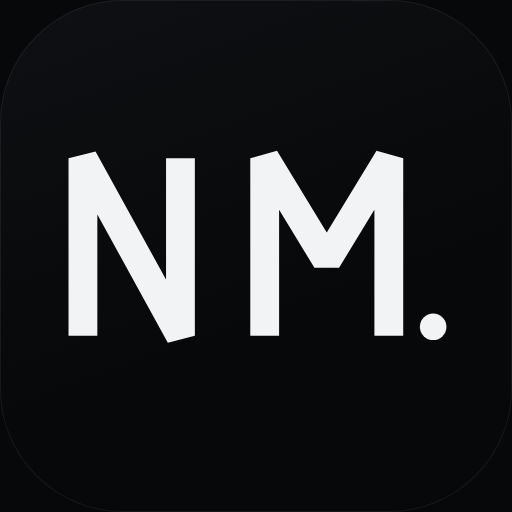
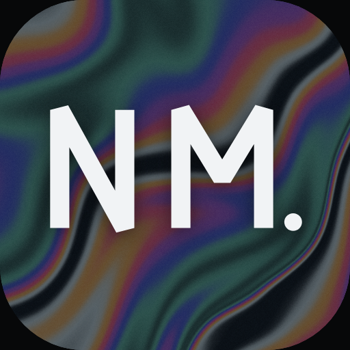

Del ganador se exportarán 64 SVG / 48 / 180 después. La fila pequeña verifica legibilidad real a 64–16 px.
v1 — Carbonicon-v1.pngMonograma NM sobre cuadrado carbón redondeado (evolución del actual orbital-icon.svg).

64483216
v2 — Warpicon-v2.pngMonograma sobre mini-crop del warp con espectro visible.

64483216
v3 — Markicon-v3.png · alfaSolo trazo NM plata + punto de registro teal sobre transparente.

64483216